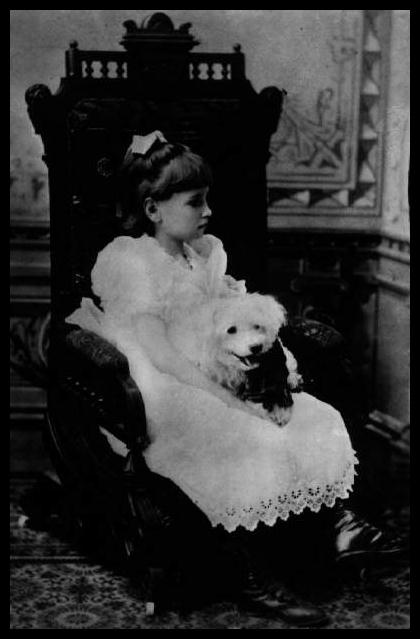
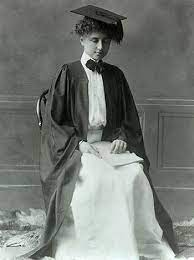
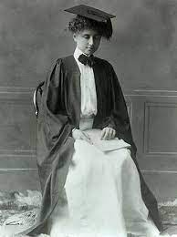
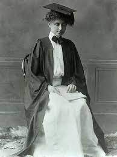

On June 27, 1880, Helen Adams Keller was born in Tuscumbia, Alabama. Kate Adams Keller and Colonel Arthur Keller
were her parents. Helen was diagnosed with an unknown illness at the age of 19 months, likely scarlet fever or
rubella, which left her deaf and blind.

Major Accomplishments
Being the first deaf and blind person to receive a bachelor's degree was one of her greatest
accomplishments.Helen Keller won numerous honors, including several honorary university degrees, the Lions
Humanitarian Award, the Presidential Medal of Freedom, the French Legion of Honor and election to the Women's Hall
of Fame. She also met every President of the United States, from Calvin Coolidge to John F. Kennedy

Contributions to Society
She advocated for the blind and for women's suffrage and co-founded the American Civil Liberties Union.She used
her education and influence to help improve the lives of others. She published several books and essays about her
own life and views and spent much of her time lecturing and lobbying for important social issues including women's
suffrage and assistance for people who were blind and deafblind.
 
